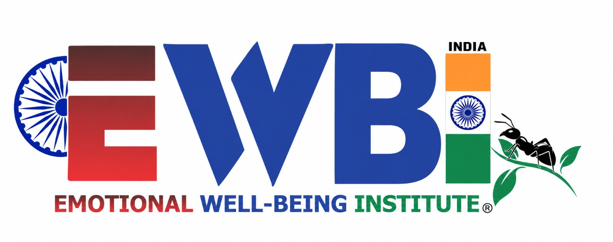

Explore the work of the parent trust and the initiatives connected to it.
Parent organisation
Cosmic Wisdom Trust (CWT)
Wisdom for Life • Harmony for Humanity
Cosmic Wisdom Trust (CWT) is a public charitable trust committed to the welfare of society through education, community engagement, cultural activities, and initiatives that encourage responsible and meaningful living.
CWT seeks to bring individuals and communities together to promote wisdom, compassion, sustainability, social responsibility, and human development. Through public workshops, educational programmes, community initiatives, and collaborations with like-minded organisations, the Trust aims to create opportunities for learning, reflection, and positive social change.
CWT provides an organisational platform for initiatives that connect traditional wisdom, contemporary knowledge, and practical action for the benefit of society.
Initiatives under the Trust
01
Education, wisdom and lifelong learning
School of Cosmic Wisdom (SCW)
Learning for a Meaningful Life
The School of Cosmic Wisdom (SCW) is an educational and community-learning initiative under Cosmic Wisdom Trust. It aims to create spaces where people of different ages and backgrounds can explore wisdom, values, self-awareness, cultural heritage, and the practical knowledge needed to live responsibly and harmoniously.
SCW promotes learning through public talks, workshops, reflective discussions, study programmes, meditation and yoga-related activities, and community-based educational initiatives.
By bringing together traditional knowledge and contemporary perspectives, SCW encourages lifelong learning, ethical thinking, personal development, and a deeper sense of responsibility towards humanity and the natural world.
Its vision is to make learning accessible, meaningful, and relevant to everyday life.
The Common Sense Observatory of India (CSOOI) is an initiative under Cosmic Wisdom Trust that seeks to encourage clear thinking, informed public discussion, responsible decision-making, and the practical application of common sense to social and environmental challenges.
CSOOI aims to provide a platform for observation, inquiry, dialogue, knowledge-sharing, and collaboration among students, researchers, professionals, and communities. It encourages people to examine assumptions, ask meaningful questions, assess available evidence, and consider the wider consequences of individual and collective actions.
Its areas of interest include public awareness, environmental sustainability, social responsibility, community well-being, and the relationship between knowledge and everyday life.
Through educational activities, public dialogues, collaborative initiatives, and evidence-informed discussion, CSOOI seeks to contribute to a more thoughtful, informed, and responsible society.
03

Emotional well-being and human flourishing
Emotional Well-Being Institute (EWBI) – India
Emotional Well-Being Is Everyone's Concern
The proposed EWBI–India initiative aims to advance emotional well-being, resilience, positive relationships, and human flourishing through education, community engagement, knowledge-sharing, and collaboration.
Building on the broader vision of the Emotional Well-Being Institute, the India initiative seeks to encourage culturally informed and inclusive approaches to emotional well-being that recognise the diverse experiences, traditions, and needs of individuals and communities.
Potential areas of engagement include public awareness programmes, educational workshops, community dialogues, professional and academic collaboration, and the exchange of knowledge and practices that support emotional well-being.
The initiative aspires to build bridges between communities, researchers, educators, practitioners, and organisations to help foster more supportive, inclusive, and flourishing societies.